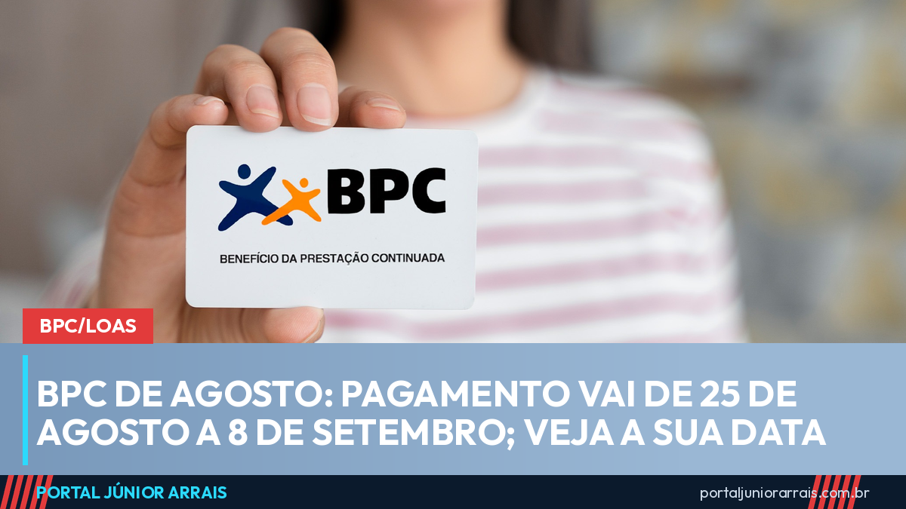

BPC de agosto: pagamento vai de 25 de agosto a 8 de setembro; veja a sua data

O Benefício de Prestação Continuada, o BPC/LOAS, começa a ser pago na terça-feira, 25 de agosto, e segue até 8 de setembro. O valor é de um salário mínimo, hoje R$ 1.621, e a data de cada pessoa depende do último número do benefício.
Quem recebe BPC entra no mesmo calendário de quem ganha até um salário mínimo pelo INSS. São tabelas idênticas, ainda que os benefícios sejam de naturezas diferentes.
O calendário de agosto, dia a dia
- Final 1 — terça-feira, 25 de agosto
- Final 2 — quarta-feira, 26 de agosto
- Final 3 — quinta-feira, 27 de agosto
- Final 4 — sexta-feira, 28 de agosto
- Final 5 — segunda-feira, 31 de agosto
- Final 6 — terça-feira, 1º de setembro
- Final 7 — quarta-feira, 2 de setembro
- Final 8 — quinta-feira, 3 de setembro
- Final 9 — sexta-feira, 4 de setembro
- Final 0 — terça-feira, 8 de setembro
Repare no intervalo maior no fim da lista. Entre 4 e 8 de setembro caem o fim de semana e o feriado da Independência, na segunda-feira, 7 de setembro. Por isso quem tem benefício de final 0 só recebe na terça.
Qual número olhar
O número que vale é o último algarismo do número do benefício, e não o final do CPF nem o dígito que aparece depois do traço. Num benefício de número 0104-7, por exemplo, o algarismo que conta é o 4.
Esse detalhe explica boa parte dos sustos: a pessoa confere a data pelo dígito errado, acha que foi esquecida e passa dias achando que o benefício foi cortado.
O BPC não paga décimo terceiro
Vale repetir todo ano, porque a dúvida sempre volta. O BPC é um benefício assistencial, não previdenciário. Ele não gera décimo terceiro, não deixa pensão por morte para os familiares e não exige tempo de contribuição para ser concedido. O que ele garante é um salário mínimo por mês enquanto durarem as condições que deram origem ao direito.
O que pode travar o pagamento
Os motivos mais comuns de suspensão continuam sendo os mesmos: cadastro da família desatualizado, renda familiar por pessoa acima do limite legal, convocação para revisão ou para avaliação que não foi atendida e irregularidade no CPF de alguém do grupo familiar.
Cuidado com golpe
Perto das datas de pagamento aumentam as ligações e mensagens dizendo que o BPC será cancelado se a pessoa não confirmar dados na hora, ou oferecendo o desbloqueio do benefício mediante pagamento de uma taxa. É golpe. Nenhum órgão público cobra para manter, liberar ou antecipar benefício, e ninguém do serviço público liga pedindo senha, código de mensagem ou foto de documento.
Quem teve o benefício suspenso, recebeu convocação para revisão ou está com dúvida sobre a renda considerada pelo sistema deve procurar um profissional de sua confiança para analisar o caso antes do prazo terminar.
Conteúdo informativo — não substitui orientação individualizada sobre o seu caso.